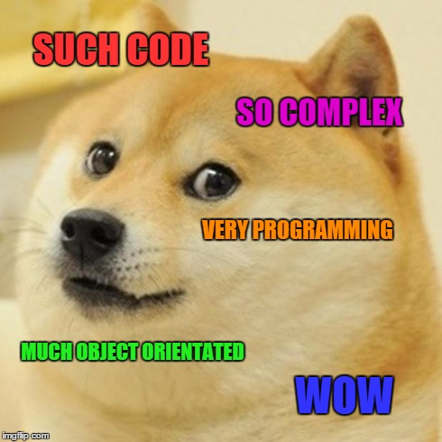

Cvičenie 8: Metódy¶
Na dnešnom cvičení si vyskúšame písanie metód. Aby sme robili aj niečo praktickejšie, naprogramujeme si jednoduchú textovú hru.
Hangman¶
Dnešným projektom bude naprogramovať hru Hangman - Obesenec. Ide o známu hru, kedy hráč musí na určitý počet pokusov uhádnuť všetky znaky v hádanom slove.

Zadanie úlohy:
- Hra obesenec v príkazovom riadku
- Na začiatku hra požiada o slovo, ktoré sa bude hádať
- Hráč zadá písmeno, hra ukáže uhádnuté znaky v slove
- Hráč má 5 pokusov, potom hra končí
Návrh riešenia:
- Vytvoríme 3 triedy
- Trieda
Stavbude spravovať stav hry: hádané slovo, uhádnuté znaky a počet ostávajúcich pokusov - Trieda
TextoveUIbude mať na starosť užívateľské rozhranie: výpis na obrazovku a načítavanie z klávesnice - Trieda
Hrabude mať hlavnú logiku hry a vstupný bod programu
Úloha 8.1: Nový projekt
V IntelliJ IDEA si vytvoríme nový Java projekt s názvom Hangman. Pri vytváraní vypneme možnosť vytvorenia Sample code, ukážkového kódu.
Trieda Stav¶
Začneme vytvorením triedy Stav. V triede budeme mať 4 atribúty, všetky privátne. Trieda bude mať jeden konštruktor, ktorý inicializuje jej atribúty. Hodnoty 2 atribútov, ostavaPokusov a hadaneSlovo zadáva volajúci pri vytváraní objektu.
package sk.spse.hangman;
import java.util.Arrays;
public class Stav {
private boolean vyhra;
private int ostavaPokusov;
private String hadaneSlovo;
private char[] uhadnuteZnaky;
public Stav(String hadaneSlovo, int pokusy) {
this.ostavaPokusov = pokusy;
this.hadaneSlovo = hadaneSlovo;
this.uhadnuteZnaky = new char[hadaneSlovo.length()];
Arrays.fill(uhadnuteZnaky, '_');
this.vyhra = false;
}
}
Popis atribútov:
vyhranám bude hovoriť, či sme vyhrali, alebo nieostavaPokusovbude obsahovať počet zostávajúcich pokusov. Ak bude 0, hra končíhadaneSlovoje slovo, ktoré má hráč uhádnuťuhadnuteZnakyje pole znakov, do ktorého budeme vpisovať uhádnuté časti slova na daných pozíciach. Má takú istú dĺžku, ako hádané slovo. Na začiatku budú všetky prvky tohto poľa znaky_(podčiarník)
Konštruktor prijíma 2 argumenty, hádané slovo a počet pokusov, na ktorý sa musí slovo uhádnuť. Ostatné atribúty konštruktor inicializuje na ich počiatočné hodnoty.
Úloha 8.2: Trieda Stav
Vytvorte novú triedu sk.spse.hangman.Stav a pridajte do nej atribúty a konštruktor podľa príkladu uvedeného vyššie.
Keďže sú všetky atribúty privátne, mimo triedy Stav nevieme priamo zistiť ich hodnotu. Musíme teda vytvoriť getter metódy. Vytvoríme ich iba pre prípady, kedy naozaj potrebujeme zistiť nejakú hodnotu.
Úloha 8.3: Getter metódy
Vytvorte nasledovné getter metódy v triede Stav:
public boolean isVyhra()- vráti hodnotu atribútuvyhrapublic boolean isGameOver()- vráti true, ak je počet pokusov menší ako 1 alebo ak sme vyhrali, ináč vráti falsepublic int getOstavaPokusov()- vráti zostávajúci počet pokusovpublic String getHadaneSlovo()- vráti hádané slovo. Bonus: slovo vráti, iba ak hra skončila, ináč vyhodí výnimkupublic String getSlovo()- vráti slovo, ktoré sme zatiaľ uhádli. Kód tejto metódy musí vytvoriť reťazec String z poľa znakovuhadnuteZnaky. Môžete na to použiť statickú metóduString.valueOf()
Vytvorili sme teda 5 getter metód. Getter metódy, ktoré vracajú boolean hodnotu sa zvyknú začínať slovom is, ostatné sa začínajú slovom get. Getter metóda nemusí vždy vracať iba priamu hodnotu atribútu. Ako vidíme v príklade metódy getSlovo(), getter metóda môže hodnoty atribútov vhodne upraviť tak, aby vyhovovali volajúcemu. Vnútornú implementáciu si potom môžeme zvoliť takú, aká vyhovuje vnútornej logike triedy.
Ostáva nám ešte napísať metódu, ktorá zmení stav hry podľa toho, aký znak hráč zadal.
Úloha 8.4: Inštančná metóda
V triede Stav vytvorte inštančnú metódu public boolean hadaj(char tip), ktorá bude meniť stav hry podľa zadaného znaku tip. V tele metódy napíšte kód, ktorý urobí nasledovné:
- Vytvorí pomocnú
booleanpremennúspravnyTip, inicializuje ju nafalse - V cykle prejdite všetky znaky hádaného slova, a ak sa znak zhoduje so znakom
tip, pridajte tento znak do poľauhadnuteZnakyna tú istú pozíciu, akú má v hľadanom slove. Ak sa znak zhoduje, nastavte premennúspravnyTipnatruePri porovnaní znakov použite metóduCharacter.toLowerCase(char), aby sme pri nebrali ohľad na veľkosť písmen. - Ak nenastal správny tip, dekrementuje atribút
ostavaPokusov - Ak je sme uhádli celé slovo, atribút
vyhranastaví natrue. Uhádnutie zistite porovnaním hádaného slova zo slovom, ktoré vracia metódagetSlovo() - Metóda vráti hodnotu premennej
spravnyTip
Hotová trieda Stav teda bude mať 4 atribúty, jeden konštuktor a 6 metód. Triedu môžeme znázorniť nasledovným UML class diagramom.
classDiagram
direction BT
class Stav {
- String hadaneSlovo
- int ostavaPokusov
- char[] uhadnuteZnaky
- boolean vyhra
+ getHadaneSlovo() String
+ getOstavaPokusov() int
+ getSlovo() String
+ hadaj(char) boolean
+ isGameOver() boolean
+ isVyhra() boolean
}Trieda TextoveUI¶
Druhá trieda, ktorú si vytvoríme, bude mať na starosti užívateľské rozhranie. Nakoľko sme si ešte nevysvetlili prácu s grafikou a grafickýmí rozhraniami, ostaneme pri textovom rozhraní. V budúcnosti budeme môcť vytvoriť inú triedu pre grafické rozhranie a nebudeme musieť meniť kód stavu hry.
Úloha 8.5: Trieda TextoveUI
Vytvorte novú triedu sk.spse.hangman.TextoveUI s nasledovným atribútom a konštruktorom:
Do triedy TextoveUI sme si pridali atribút scanner, ktorý budeme používať pri čítaní z klávesnice. O správnu inicializáciu atribútu sa postará konštruktor triedy.
Do tejte našej triedy potrebujeme pridať 2 inštančné metódy, ktoré budú načítavať údaje z klávesnice. Potrebujeme totiž na začiatku hry zadať hľadané slovo a počas hry potrebujeme, aby nám hráč zadával písmená, ktoré chce hádať.
Úloha 8.6: Získanie vstupu
Vytvorte nasledovné inštančné metódy v triede TextoveUI. V kóde týchto metód použite atribút scanner na načítanie hodnôt z klávesnice.
public char ziskajTip()- vypíše na obrazovku text "Hádaj písmeno: " a načíta jeden znak z klávesnice. Použite metóduscanner.nextLine()a potom pomocou metódyString#charAt()vráťte prvý znak, ktorý užívateľ zadal.public String ziskajHadaneSlovo()- vypíše na obrazovku text "Zadaj slovo, ktoré sa má hádať: " a načíta slovo z klávesnice. Vráti načítané slovo. Po načítaní 'vyčistite' obrazovku napísaním veľkého množstva nových riadkov (znak '\n')
Ostáva nám napísať zopár metód na vypísanie rôznych informácií na obrazovku
Úloha 8.7: Vypísanie informácii
Vytvorte nasledovné inštančné metódy v triede TextoveUI.
public void vypisIntro()- vypíše text "Vitaj v hre Obesenec!". Text môžete pekne orámovať, ak chcete.public void vypisStavHry(Stav stav)- do samostatného riadku vypíše "Slovo: " a za ním vypíše zatiaľ uhádnuté slovostav.getSlovo()public void vypisVysledokHry(Stav stav)- Ak jestav.isVyhra()true, vypíše "Vyhral si!". V opačnom prípade vypíše "Prehral si, hľadané slovo bolo: " a vypíše hľadané slovo.public void vypisVysledokHadania(char tip, boolean spravnyTip)- ak je vstupny argumentspravnyTiptrue, vypíše "Uhadol si dalsi znak!". V opačnom prípade vypíše "Znak %c sa v hľadanom slove nenachádza", pričom vypíše znaktip.
Trieda TextoveUI bude teda mať 6 inštančných metód, 2 na čítanie a 4 na výpis. UML diagram tejto triedy by mohol vyzerať nasledovne:
classDiagram
direction BT
class TextoveUI {
- Scanner scanner
+ ziskajTip() char
+ ziskajHadaneSlovo() String
+ vypisIntro() void
+ vypisStavHry(Stav) void
+ vypisVysledokHry(Stav) void
+ vypisVysledokHadania(char, boolean) void
}Trieda Hra¶
Ostáva nám napísať hlavnú logiku hry. To nebude zložité, nakoľko väčšinu logiky už máme implementovanú v triedach Stav a TextoveUI. Hlavná trieda Hra bude mať za úlohu tieto veci:
- Vytvorí objekt triedy
TextoveUI - Vypíše intro a načíta hádané slovo do pomocnej premennej
- Vytvorí objekt triedy
Stava do konštruktora vloží hádané slovo. Počet pokusov nastaví na 5 - Spustí cyklus, ktorý sa opakuje, kým nie je koniec hry (
stav.isGameOver()) - V cykle vypíše stav hru, načíta tip, zavolá metódu
hadaj()a vypíše výsledok hadania - Po skončení cyklu vypíše výsledok hry
Úloha 8.8: Hlavná trieda Hra
Vytvorte triedu sk.spse.hangman.Hra s nasledovným kódom
package sk.spse.hangman;
public class Hra {
public static void novaTextovaHra() {
TextoveUI ui = new TextoveUI();
ui.vypisIntro();
String hadaneSlovo = ui.ziskajHadaneSlovo();
Stav stav = new Stav(hadaneSlovo, 5);
while(!stav.isGameOver()) {
ui.vypisStavHry(stav);
char tip = ui.ziskajTip();
boolean spravnyTip = stav.hadaj(tip);
ui.vypisVysledokHadania(tip, spravnyTip);
}
ui.vypisVysledokHry(stav);
}
public static void main(String[] args) {
novaTextovaHra();
}
}
Trieda hra je z hľadiska štruktúry jednoduchá, má iba 2 statické metódy a nemá žiaden atribút. V UML Class diagrame sú statické metódy podčiarknuté.
classDiagram
direction BT
class Hra {
+ novaTextovaHra()$ void
+ main(String[])$ void
}Hra je hotová, spustite ju spustením triedy Hra a môžete začať hrať. Poproste vášho suseda, aby vám zadal hľadané slovo.
Na budúcom cvičení pokračujeme v tomto projekte, pokiaľ ste niektoré úlohy nestihli na hodine, dokončte si ich do budúcej hodiny doma.

Blahoželáme k úspešnému naprogramovaniu hry. Nižšie nájdete bonusové úlohy.
Úlohy na precvičenie¶
Úloha 8.9: Hrajte znova
Po skončení hry nevypnite program, ale spusťte hru znova. Pamätajte si počet výhier a prehier.
Úloha 8.10: Defaultný počet pokusov
Vytvorte konštantu DEFAULT_POKUSY v triede Stav. Vytvorte preťažený konštruktor, ktorý bude prijímať iba hľadané slovo a použite tento defaultný počet pokusov. Odstráňte magické číslo z triedy Hra
Úloha 8.11: Defaultný zoznam slov
Vytvorte konštantu pole slov DEFAULT_SLOVA v triede Stav. Dajte do neho 20 slov. Vytvorte preťažený konštruktor, ktorý nemá žiaden argument a použije náhodné slovo z tohto zoznamu.
Úloha 8.12: Ošetrenie vstupov
Ošetrite vstupy do konštruktora, vyhoďte výnimky, ak sú nesprávne. Podobne ošetrite vstupy do metód a vstupy z klávesnice.
Úloha 8.13: Počet pokusov
Pri výhre vypíšte, na ktorý pokus hráč vyhral
Úloha 8.14: Pamäť nesprávnych znakov
Pamätajte si nesprávne znaky, ktoré hráč hádal. Pri vypísani stavu hry ich v každom kole vypíšte.
Úloha 8.15: Nepozornosť sa nevypláca
Odoberte pokus, aj keď hráč zadá znak, ktorý je síce správny, ale už ho pred tým zadal.
Zhrnutie cvičenia¶
- Vyriešte úlohy a naprogramujte textovú hru Obesenec
- Getter metódy, ktoré vracajú boolean hodnotu sa zvyknú začínať slovom
is, ostatné sa začínajú slovomget. - V UML Class diagrame sú statické metódy podčiarknuté
Poznámky do zošita
Toto cvičenie si do zošita nemusíte písať žiadne poznámky
Skúšanie a kontrola vedomostí
Na budúcom cvičení pokračujeme v tomto projekte, pokiaľ ste niektoré úlohy nestihli na hodine, dokončte si ich do budúcej hodiny doma.
Okruhy otázok na test:
- Vedieť vytvoriť a použiť inštančné metódy